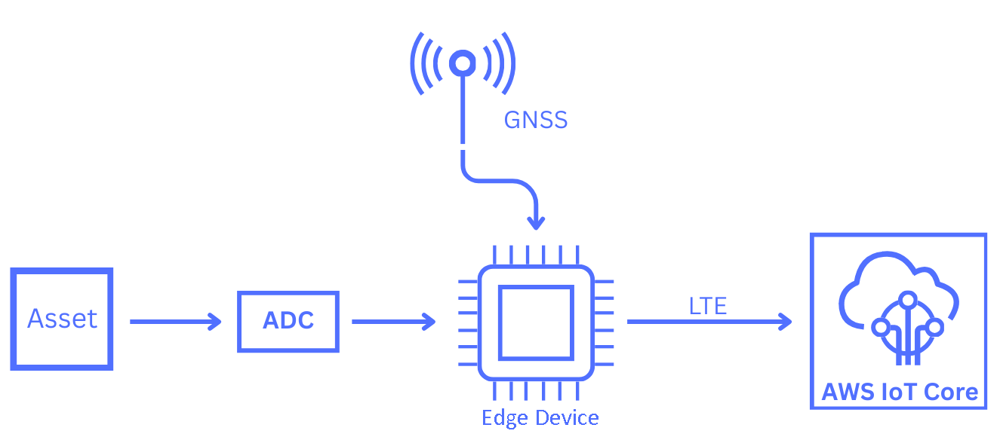
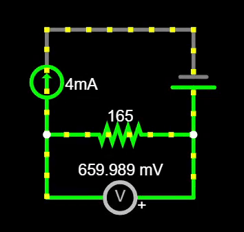

Abstract:
I was the lead engineer responsible for developing functional firmware for an IoT edge device at Auredia. This page provides a high-level overview of the systems I implemented and the engineering practices I learned throughout the development process.
Context:
Auredia is a startup powered by National Oilwell Varco (NOV) that develops technology for collecting and visualizing CNC machine data. This information provides floor managers with greater visibility into machine operations and helps identify opportunities to limit downtime.
Electrical Engineering Interns would work towards developing a tangible product that is affordable, non-invasive, and easy to install. This Auredia Edge Device, upon deployment, is expected to reduce costs 95-98% from Auredia's previous architecture.
Developing firmware for an IoT edge device required bringing several embedded systems concepts together into a single functional product. Throughout development, I worked with Analog-to-Digital Converter (ADC), Amazon Web Services (AWS), Global Navigation Satellite System (GNSS), and Watchdog Timer (WDT). In 2026, I performed extensive Refactoring. The following sections provide a high-level look at these technologies and how they contributed to the development of the Auredia Edge Device.

Analog-to-Digital Converter (ADC):
The Auredia Edge Device supports analog-to-digital conversion (ADC), allowing real-world analog signals to be measured and processed by the device's firmware. In Auredia's application, industrial 4-20 mA signals are sampled over a resistor using ADC.

I implemented firmware responsible for acquiring and processing these ADC measurements. Readings from multiple ADC channels are collected and packaged into an array, which is then published through the firmware's event-driven architecture. The AWS thread will listen to this event and convert ADC data into a JSON-formatted payload that is published to Amazon Web Services.
Amazon Web Services (AWS):
Amazon Web Services (AWS) is used by Auredia to collect and aggregate device data, deploy firmware over-the-air (FOTA) updates, and support communication between deployed devices and the cloud. I implemented a dedicated thread for Auredia's Edge Device that initializes LTE communication with AWS, publishes JSON-formatted payloads containing data from the ADC and GNSS threads, and listens for and initiates FOTA updates. This functionality uses various project libraries and event flags built into the device's firmware, allowing these operations to be coordinated efficiently with the rest of the system.
Global Navigation Satellite System (GNSS):
Global Navigation Satellite System (GNSS) uses satellites to provide positional data to a device. It works by establishing communication with multiple satellites and using their signals to determine a position. Through this process, latitude, longitude, altitude, and timing data can be obtained. Using project libraries and event flags, Auredia's Edge Device tracks satellites until it is able to obtain a positional fix. This positional data is then published as an event. The AWS thread listens for this event, converts the GNSS data into a JSON-formatted payload, and publishes the resulting telemetry to Amazon Web Services.
Watchdog Timer (WDT):
A Watchdog Timer (WDT) is a hardware or software timer used to detect and recover from system malfunctions in embedded systems. If the system fails to periodically reset the timer, commonly referred to as “feeding the watchdog,” the WDT triggers a system reset. This helps prevent the system from remaining in an unresponsive or stalled state. For Auredia's Edge Device, I configured a hardware watchdog so that if the system stalls and fails to feed the watchdog within this period, the WDT triggers a hardware reset. This allows the device to recover from potential lockups or unexpected behavior.
Refactoring (2026):
Refactoring refers to the process of improving existing code without changing its intended functionality, with the goal of creating cleaner, more maintainable, and more efficient software. Throughout 2026, I extensively revamped the original firmware to improve its reliability, consistency, and overall architecture. The existing codebase lacked consistent formatting, contained an unnecessarily complex architecture, and included several mechanisms that did not function as intended. Below are some of the major changes I made during my second internship at Auredia:
Code Standardization
Standardized formatting and coding conventions. Improved comments and logging. Removed redundant code/dependencies. Made module execution patterns consistent. Refactored ADC by replacing unnecessary storage structure with an array.
Firmware Architecture
Converting LED functionality from timer-based execution to a PWM dedicated thread with state-driven logic. Standardized thread entry patterns. Fixed workqueue and threading bugs.
Firmware Over-the-Air (FOTA)
Integrated FOTA implementation into AWS thread. Converted program to multi-image build system. Adjusted configurations to accomodate new memory requirements.
Reliability
Addressed bugs and edge cases across all threads. Corrected ADC channel initializations and sampling behavior. Added missing NULL and JSON validation checks. Expanded error reporting.
Conclusion:
This is one of my favorite long-term projects I have worked on because of the vast application of the product and its implications for Auredia/National Oilwell Varco. Through development I learned how to design threaded firmware, how to operate modern tools (e.g., Claude CLI/Git Bash), how to refactor old programs, and much more. I hope programming embedded systems is a skill I continue to improve upon as I delve into industry.